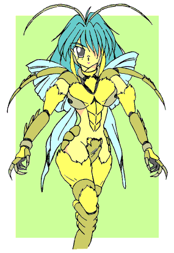
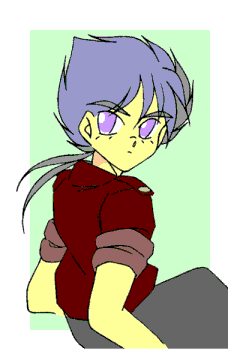

戻る
めいぷる！─ザ・インセクト─
第一話 最終章・ずっと、いっしょ。
作：Ｋ．伊藤
───第一幕・東雲大吾＆宮ノ森かなみ───
「蟲螻が！ 鬼に勝てると思うなぁッ！！」
鬼の力を宿した拳が、大百足の頭を叩きつぶす。
「ぐ……うっ！！」
張り巡らせた結界が軋んで、突きだした両手が痛んだ。
鬼の力を宿した拳が煌めく度に、白い体液を撒き散らして蟲共が吹き飛ぶ。
そこに居るのは一匹の鬼だ、まさしく鬼神、圧倒的な暴力の嵐。
大吾が四肢を振るう度に大蜘蛛だの大百足だのが、紙屑のように引きちぎられ、両断され、へし折られ、潰されていく。
しかし、それでもやはり多勢に無勢、刻一刻と大吾の体力は奪われ、小さな傷は増え続ける。
——塵も積もれば、山となる。
いかに鬼の力を宿していようと、その身体は人間の物なのだ。戦いが長引けば失血と疲労で何時かは動けなくなるか。
——あるいは、鬼の力の使いすぎで鬼に魂を喰われるか。
かなみの張った結界が軋む、少女の華奢な指の骨がミシミシと鳴っている。
結界の向こう側には赤い牛頭の巨人と青い馬頭の巨人。その姿は、地獄の門番と言われる牛頭鬼と馬頭鬼そのもの。
その巨体に相応しい怪力をもって、かなみの結界を押しつぶそうとしている。ぱきり、と結界に亀裂が走る。
（っ！！ 痛い、折れちゃう、手が、指の骨、痛い、折れる、痛い、痛い痛い痛い！！）
──次の瞬間、ぺきん、と軽い音を立てて、かなみの左手の指がへし折れた。
「あ……あぁぁぁぁあぁぁあぁっ！！」
「かなみっ！？ ……ぐっ！！」
悲痛な叫びと共に結界が消える、かなみの叫びに気を取られた大吾が、巨大な蜂に肩の肉を喰い千切られた。
二匹の鬼が少女に襲いかかる、好機と見た蟲の軍勢が一気に大吾を襲う。
動きの速い馬頭鬼の振りかぶった鉄杖が、かなみを殴り飛ばそうと迫る。
次々と襲い来る蟲に大吾は身動きが取れない、かなみが自分で何とかしなければ、死——。
「ひ！？ ぐっ……うあぁぁぁぁっ！！」
「かなみ！！ くそ、かなみぃぃっ！！」
咄嗟に張った結界は脆く、容易く打ち砕かれた。体重の軽いかなみが吹き飛ばされる。
が、それは幸運だったと言うべきか、次の瞬間、彼女の居た場所に牛頭鬼の石斧が撃ち落とされた。
周囲に響く重い音、大地が揺れる。まともに喰らっていれば、かなみの身体など、完熟したトマトの様に潰されていただろう。
右手で身体を支え身を起こす、左腕があり得ない方向にねじ曲がり、皮膚を突き破って骨が顔を出している。痛い、痛い、痛くて気を失いそうだ、気力を振り絞る、大丈夫、まだ右腕は生きている。
「あ、あ、あ、ぐぅ……っ！！」
上げた顔は、涙と鼻水でぐしゃぐしゃだ、ぼやける視界の向こうで馬頭鬼が鉄杖を、牛頭鬼が石斧を振りかぶっている。
死ねない、まだ死ぬわけにはいかない、座り込んだまま右手を掲げ、死力を振り絞って結界を──。
「かなみ！！ 下がれ！！」
そう言って大吾がかなみの脇を抜けた。鬼人の拳が牛頭鬼の脇腹に突き刺さる、ずどん、と重い音が響いて、牛頭鬼が膝を付いた。
相当な無理をしたのだろう、大吾は既に満身創痍。血と返り血にまみれ、着ていた服はまさしく襤褸衣。
いや、それだけではない、額の角、口元の牙、鋭く伸びた爪。——大吾は、鬼に成りかけている。
魂の奥底から殺戮衝動が沸き上がる。暴力性と残虐性が増大していく。心の牢獄に閉じ込めた鬼が囁く。
——さぁ殺せ、さぁ奪え、破壊しろ、戦え、戦え、戦って殺せ、犯せ、犯して殺してまた犯せ、喰らい尽くせ、血を、もっと血を——
「黙れ！！」
叫んで口元の笑みを噛み潰す、最悪自分が死ぬ事になっても、かなみの安全は確保してからだ。
三人——志藤楓、東雲大吾、宮ノ森かなみの三人——がハンミョウを追って辿り着いたの先にあったのは、洞窟の入り口と、待ちかまえていた敵。大蜘蛛大百足大蚯蚓……数え切れない化け物と、地獄の門番、牛頭鬼馬頭鬼。
「死霊が集まって牛頭鬼馬頭鬼の形になっているだけだ、あれは、本物の鬼じゃない」
そう言ったのは大吾、本物では無いと本物が言うのだから、間違いないのだろう。
そして彼らの採った行動は、楓を先に行かせて、この場は大吾とかなみが引き受けるというものだった。
楓は「私も残る、一緒に戦う。」と主張したが、大吾の「葵を助け出せばこいつらは消える、急げ！！」という言葉で、先に進む事を決意した。消耗戦になれば勝ち目は薄い、それが彼らの共通認識だったから。
その後すぐ激戦になった。
かなみが牛頭鬼馬頭鬼を抑えて、その間に大吾が雑魚を叩きつぶす事にする。大吾の提案だ。
かなみには攻撃手段が無い、戦闘の経験なんか有るはずも無い、だから彼女は全てを大吾に任せた。
知り合って間もないけれど、確かに大吾は信用にも信頼にも値する人物だ、そう判断したから。
かなみには戦闘の経験なぞ皆無だが、この短い時間でも気が付いたことがある。
１に、彼女の結界は、両手で作り出しているらしいと言うこと。
上手くやれば結界を二つ作れる、一枚一枚は弱くなるのだが、これの利用価値は高い。
２に、結界と超回復は同時に行えないという事。
結界を張った状態では、負った傷や疲労はまるで回復しない、疲労は寧ろ溜まる一方だ。
３に、結界は絶対では無いという事
キャパシティ以上の大きな力を加えられれば結界は砕かれる、彼女の手と共に。
今さっき、力に優れる牛頭鬼のパワーに押し切られて、左手が砕けた様に。
「んっ……くっ……。」
かなみの左手が動くようになった。まだ痛みはあるが、結界を作り出すには十分な回復。
「大吾さん！！」 と叫び両手を掲げるかなみ。
「洞窟に入って伏せろ、かなみ！！ ——禍ツ風、凶殺ノ雷、大爆雷！！」 鬼の力を込めて術を発動させる大吾。
かなみが言われたとおり洞窟に駆け込んで伏せ、大吾も洞窟に走り込んできた次の瞬間。
——目を閉じてなお感じる閃光と共に、山に爆音が轟いた。
───第二幕・東雲家母親会議───
「……そうですか、かなみが、そんな事を。」
そう呟いたのはかなみの母、珠美。それに答えるのは大吾の母、幸恵。
「はい、止めませんでした、もし何かあったら、私の命で済むなら幾らでもお支払いします。」
二人の会話に口を挟むのは、楓と葵の母、茜。
「いやいや、かなみ君は私の娘を救う為に山に行ってくれたんだ、止めなかったのは私も同じだしね、何かあったら、私の責任だよ。」
東雲家の一室で、三人の母親が顔を揃えていた、父親の姿は見えない。彼らは日中の事件の事後処理に追われて、忙しい思いをしていたからだ。
「いえ、良いのですよ、むしろ嬉しく思っています。あの子が強くなってくれたのは、楓ちゃん、葵ちゃん、大吾ちゃんのおかげでしょうから。」
そう言って、珠美はお茶を啜った。
正直、心配は心配だ、たった一人の娘、心配しない訳がない。ましてや珠美には病弱で臆病なかなみのイメージが、根強く残っている。しかしそれ故に、強くなってくれた事を喜ぶ気持ちも、また真実だった。
「いえ、うちの愚息はそんな上等な物ではないです、何でしたら、帰ってきたら好きなだけ殴りつけて構いませんから。」
幸恵が紙に何かを書き付けながら答える、退魔式の準備だ。
すでに二人も子を産み処女性など残ってない幸恵ではあるが、退魔の術は巫術だけではない。それこそ知識としてだけなら、基督教の悪魔払いだって知っている。
今用意しているのは鬼道、この場合の鬼とは死んだ人間の事を指す。英霊や先祖を呼び出し、悪霊を祓って貰うというもの、系統で言えばイタコに近い。呼び出す人物は決めていないが、よほどの悪霊でない限り英霊の呼び出しは必要ない筈。それこそ、程度の低い相手なら現場で大吾が祓って来てしまうだろう。
「そうなのかい？ 大吾君はなかなか立派な少年だと思うけどね。私がもう少し若かったら……母親の前で言う事じゃ無いか、失礼。まぁ安心して良いよ、なんと言っても楓が居るからね、うちの自慢の息子が居るからね、いや、自慢の娘だったか。まぁともかく、全員無事に戻ってくるさ。」
ソファに横になったまま茜が言った。
彼女は、病院に行こうという幸恵の言葉を断って此処で待っている。幸恵の治癒術と痛み止めの薬のおかげで、酷く痛むことはないが、代わりに猛烈に眠い。先程から何度も眠りに落ちかけている、眠りに落ちきれないのは——やはり、心配が故か。
「……。」
「……。」
茜の自信満々の言葉に、幸恵と珠美は黙って茜を見ている。
「……？ どうしたんだい、二人とも、私は何か変な事を言ったかな。」
「……いえ、何も変な事は。そうですね、母が子を信用するのは当然の事です。」
「そうですね、うちの大吾も居るのです、何も心配はありません。」
「あら、うちのかなみも、ああ見えて意外と、やる時はやる子ですのよ？」
軽口を叩き合う母親達ではあったが、幾ら口ではそう言おうとも、三人とも心の中では心配している、時計の進むのが遅く感じられてしょうがない。
「——さぁ、あの子達はきっと腹を空かせて帰って来るよ、何か作って待ってるとしようか、幸恵君、台所と食材を借りていいかな。」
どうせ眠れないのなら、と、茜が立ち上がろうとして、他の二人に止められる。
「いえ、茜さんは休んでいて下さい、怪我人なんですから、私が何か作りますよ。」
「いえいえ、幸恵さん、何か準備があるのでしょう？ 此処は私が。」
「——えぇ、そうですね、では厨房にご案内しますので、好きに使って下さい。」
幸恵と珠美が二人揃って厨房の方に消える。残された茜は窓の外を見た。
あの子達ならきっと、どんな困難でも乗り越えて帰る。母親が信じてやらないで、誰が信じてやるというのか。
けれどまた、母親というのは子供を心配するもの、それも母の役目。
「楓、葵、大吾君、かなみ君……どうか、無事で……。」
と、山の中腹あたりが光り、ずずん、とくぐもった爆発音が僅かに遅れて届いた。
「——はは、なかなか派手にやってるじゃないか、あの子達も。」
───第三幕・志藤楓───
「葵、迎えに来たよ、さぁ——お姉ちゃんと、帰ろう？」
大吾とかなみを残して進んだ先は、ちょっとした迷路になっていた。まぁ、迷うことは無かったんだけど。
それは、私の肩に留まったハンミョウのおかげ。彼女の指示通りに最短ルートを突っ走って、たいした障害や罠に遭う事もなく、すぐに終点に辿り着けた。
——そこに、葵が居た。
「遅かったな、お姉ちゃん、この身体にもう葵はおらぬ、消えてしまったよ。」
葵が、私の知らない顔で、私の聞いた事のない口調で、そう言った。
「嘘だね、私にはわかるよ。今も葵は私を呼んでる、聞こえるんだよ、葵の声が。」
千早を脱ぐ、緋袴を脱ぐ、白衣の腰紐を解く。……和服って脱ぐ時は楽でいいなぁ。
「ふん、葵、葵、そんなに葵が大事か、まったく麗しい姉妹愛じゃな。」
「そんなの大事に決まってんでしょ、それにね。」
白衣を脱ぎ、襦袢を纏ったまま腰巻きと裾除けを落とす。
「約束しちゃったんだよ、お前は何があっても俺が守ってやるからな……って。返して貰うよ、葵を！！」
「──ところで、何故脱いでおるのだお姉ちゃん……はっ！？ まさか色仕掛け！？」
「違うよ！！ こういう理由だよっ！！ 変身っ！！」
襦袢を脱ぎ捨て葵の視界を奪う、それと同時に走り出す。
変身は一瞬の出来事、皮膚が瞬く間に硬質化、それが外骨格の鎧と変化するのは束の間。
背中に生えた羽を大きく広げ空気を叩いた。今だ宙を舞う襦袢を飛び越え葵の元へ！！
「は！ はははっ！！ やはりお姉ちゃんも人では無かったか！！ 人を捨てて居たか！！」
葵が伸ばした指先から蜘蛛の糸が放たれる、回避する為に更に羽ばたいて一気に天井近くへと。
そして、そのまま天井を蹴って葵の元へ──胸のざわめき、変更！ 急降下！ 私の通るはずだった軌道を蜘蛛の糸が通り過ぎる。
「私はともかく、葵は人間だ！！ 返せ！！ 葵を返せっ！！」
「葵！ 葵！ 葵！ それしか脳が無いのかお姉ちゃん！！」
着地して一気に駆け寄り間合いを──駄目だ！ 地面を蹴って葵の吐いた毒液を回避する。
「葵の身体でそんな事するなぁ！！」
手から蜘蛛の糸はまだ許せる、あれはアメコミヒーローもやってる事だから……ギリギリだけど許せる。
でも、口から毒液はいただけない、そんな化け物じみた事、葵の顔でやってほしくない。
「なら、大人しく我に従え！！ お姉ちゃん！！」
葵が突きだした右手から、放射状に蜘蛛の糸が迫る、回避──不能。
「メイプルエクスプロージョンッ！！」
右手と左手で別の物質を生成、噴射、混ざり合ったガスが爆発を起こし、蜘蛛の糸を吹き散らす。
「っち！！ あちちっ！！」
爆発を回避するためにバックステップ、苦し紛れに私が放出した蜘蛛の糸は、葵の蜘蛛の糸に迎撃されて届かない。
どうする、どうする、遠間から大技で攻撃は出来ない、あれは葵の身体だ、怪我させるわけにはいかない。
けど、間合いを詰められない、よしんば詰めても、そこからどうするべきか？
「ほら、ほら、どうしたお姉ちゃん、逃げ回るだけか？」
葵が蜘蛛の糸を連続放射、間合いさえ離れていれば当たりはしないが、もし当たればそこでゲームオーバーかもしれない。糸の強度がどれくらいかわからないが、試してみる危険は犯せない。
——せめて一瞬でも葵に意識を取り戻させられれば。
「葵っ！！ 目を覚ましなさいっ！！ お姉ちゃん怒るよっ！！」
「無駄だ！！ 無駄だっ！！ お姉ちゃんの声は葵には届かぬ！！」
まったく、お姉ちゃんってのは大変だ。——さて、どうやって助け出すかな。
———幕間・名も無き一匹の蜘蛛———
我は蜘蛛、一匹の蜘蛛。
何時、何処で、何奴が、何故、如何にして産まれ生きてきたのか。
──知らず、気が付けば唯我独り其処に在り。
最初の記憶は紅、白い世界にただ一つ咲く紅い花。
あれは何だろう、あの赤い綺麗なのは何だろう、それが覚えている最初の思考。
この降り積もる白くて冷たい物はなんだろう。あの空に浮かぶ丸い光はなんだろう。
我は何故此処に居るのだろう、何時から居たのだろう、何処から来て何処に行くのだろう、何故生きているのだろう。
あれはなに？ それはなに？
これは食べられる？ あれは美味しい？ それは不味い？
そうして疑問と知識を蓄えながら時間は過ぎていく。
長かったような気もするし、短かった気もする。
そんな中、我が最も興味を引いたのは人間、人間共の暮らし。
色々な形が、様々な色が、多様な年齢が、集まって暮らす、人間。
喜び、怒り、泣き、笑い、集まって共に生きている、人間達。
何故、我は独りなのだろう。何故、我には共に生きる存在が居ないのだろう。
共に生きる存在が居るというのは、どんな気持ちなのだろう。
我は飽く事無く、人間の暮らしを遠くから眺め続ける。
人の言葉を覚えた、試しに使ってみた、畏れられた。
その年から、間引いた子供や年老いて死んでいった者が、我の塒に捨てられるようになる。
生け贄とは名ばかり、ほとんどは死体か死にかけ。
試しに囓ってみた事もあったが、たいして美味くも無いので、塒の奥に埋めた。
そうして幾つもの昼と夜を過ごした、ある年の事。
夏の前の雨が長く冷たく降り注ぎ、山の恵みが減り。人も獣も我も飢えていたあの年の事。
我は初めて、人を、人の住む村を襲った。
肉が固くて不味そうな男には目もくれず、柔らかくて美味そうな女や童を狙って追った。
泣き叫び逃げ惑う人間達を、いたぶるようにして追い立てた。村から出るまで走らせ続けた。
そうして──山が崩れて村が消えた時、我の躯は満身創痍。
鉄や木があちこちに突き刺さり、投げつけられた石で傷だらけだった。
痛む躯を引きずって塒に帰ったが、怪我と空腹で塒を塞いだ岩を動かす力も無く。
仕方無しに、躯を捨て、生け贄の童に取り憑く事にした。
生きる為に、生かす為に。
そのまま、我は生け贄の童と共に眠る事になる。
あの岩が動いて、外に出られるようになる日まで。
お母さんの腕に葵が抱かれた、あの日の夕暮れまで。
───第四幕・「メイプル ザ インセクト！！」───
「ちょ、ちょっと待って、待ってってば！」
「待たぬ！ さっさと捕まるが良いぞ！ お姉ちゃん！」
次々と襲ってくる蜘蛛の糸を必死でかわす。近寄れないなんてもんじゃない、遠間を逃げ回るのが精一杯。
何しろ、葵の腕が６本に増えて、それぞれの手の先から蜘蛛の糸を放出してくるのだ、とても避けきれるものじゃない。
実際何度か捕まり、その度に強酸で糸を溶かして窮地を脱していた。おかげで、私の鎧もぼろぼろだ。
葵の首があり得ない角度まで曲がって、私の動きを追跡している、６本の腕がウネウネと動く。
「くっそー！ それは葵の身体だぞ！ あまり変な事すんなー！！」
——可愛い妹がどんどん変になっていくのは、正直あまり見ていたい光景じゃないなぁ。
「もう諦めろお姉ちゃん、喰わないでやるから、葵は諦めて我の物になれ！！」
「我の物ってアンタ！ 私に何させるつもりだよ！！」
「そ、そんな事言えるわけ無かろう！！」
「言えないような事させる気かっ！！」
葵の攻撃が勢いを増す、蜘蛛の糸が雨の様に降り注ぐ。何とか、何とかしないと！！
「あ、し、しまったっ……！！」 地面に落ちていた蜘蛛の糸に、足を突っ込む、バランスを崩す。
「獲ったっ！！ 此処までじゃお姉ちゃん！！」 それを好機と見た葵が、一気に攻勢に出る。
六腕同時射撃……来た、チャンスだ、これを待っていたっ！！
この糸は、私が自分で仕掛けた粘着力無しの糸だ、つまり、足なんか簡単に抜けるのさ。
右手と左手で別々のガスを生成、噴射、混ざりあったガスが爆発する前に、その中に飛び込んで背中の羽を広げた。
「くっ……あ！！」
タイミングバッチリ、背中で起きた爆発が、私の身体を前に押し出した。同時に地面を蹴って一気に前へ。爆風を受けた羽がへし折れた、鎧の隙間から熱風が入り込んで背中が焼ける、物凄く痛くて熱いが、そこは男の子、我慢っ！！
「メイプル爆発ダーッシュ！！」
一気に距離を半分に詰めた、走る、というよりも連続跳躍で、更に前へ！！
「なっ！？ なんという安直な名前を！！」
驚く所そこ！？ 流石は私の妹、つっこまずにいられないか、だけど、それより先にやる事があるんじゃないの？
「くっ……おのれっ！！」
葵の蜘蛛の糸が放たれる、けど、狙いが甘い。そりゃそうだ、横の動きが急に点の動きになれば、狙いはつけにくい。しかも、直前に爆発を見ている、暗い洞窟の中で急に明るい光を見たのだ、投射の照準を目視だけに頼っていたら、そりゃ今の状況はきついだろう。前へ、もっと前へ！！
「おのれ！ おのれ！ おのれぇぇっ！！」
６本の腕が同時に蜘蛛の糸を放射状に放出した。線では捕らえられないと気が付いたか、６つの蜘蛛の巣が迫ってくる、面での防御。葵へ到達する道が塞がれた。けど、それは予想していた攻撃！！
さぁ、見せてあげるよ——私の本当の姿！！

「装甲解除ッ！！」
蜘蛛の糸が全身に巻き付いたところで、外骨格の鎧と兜を脱ぎ捨てた。身体に巻き付いた蜘蛛の巣が弾け飛ぶ。全てのリミッターを外した私は地上最強、単独の生命体で私に勝てる者など居ない！！ 多分！！
そう、これが私本来の姿、これが、これがっ！！ これがメイプル・ザ・インセクトだっ！！ 別に触れても死を意味したりしないけどねっ！！
更に速く！ 早く！ 疾く！！ 前へ！！ 葵の元へ！！ BGMに挿入歌かかっちゃってるよっ！！
そして最後の跳躍、二人の距離が零に近くなる、既に一挙手一投足の間合い！！
「糞がぁぁぁッ！！」
「女の子が、そんな台詞言うもんじゃありません！！」
私の両手が葵の両手ｘ２と絡み合う、単純な腕力なら私の方が上だけど、葵の手は片側３本ずつの両手で６本。そのうち４本で私の腕を防いで、２本で私の足に糸を巻き付けた、動きが封じられる。
「王手じゃ！ お姉ちゃん！！」
葵が大きく口を開く、口の中には炎が渦巻いて……って、火まで吐けるの！？ この子！！
けど、その炎は飲み込んで貰うよ、勝つのは……私っ！！
「王手読みだよ！ 妹！！」
私の脇の下の皮膚が裂け、そこから腕が伸びる。馬鹿だね、私も同じ事が出来ると、何故思わない？
本来の腕より幾分か細く白いが、これで十分。腕を振り上げ葵の額に向けて、渾身の力を込めて！！
「目を覚ましなさい！ お寝坊さん！！」
デコピンを、ぶちかました。
「へっぴゅっ！？」
変な声を上げて葵の首が、がくん、と後に反り返る。そして、再び起きあがった顔は、困惑して涙目で額が赤く悔しそうで——要するに、表情が無茶苦茶だった。
「え！？ あ！！ お、お姉ちゃん！？ く、くそ、目を覚ましたか葵！！ あと少しと言うところで！！ あ、あ、お姉ちゃん、ご、ごめんなさい、ごめんなさ、おのれ、おのれ、う、うぁ、ご、ごめんなさ──んうっ！？」
唇を唇で塞いで、葵を黙らせる。
「ん、ん、んうっ！？ ん、んー、んぅっ！！ ん……ん、んぐぅ……！！」
暴れる葵を抱き寄せる、更に唇を押しつける、髪の毛を撫でてやる、背中を叩いてやる。
「ん…………んぅ…………んっ……んんっ！？ んーんんんっ！？ んぅ！？」
力が抜けたところで、舌を押し込んだ、葵を更に強く抱きしめて、舌を絡め、唾液を流し込む。
「んぐ、んぐ、ん、ちゅ、ちゅく……ん……んちゅ……ぐ……んぅ……。」
葵の抵抗が弱くなる、目がとろん、として、身体の力が抜けていく。
──そして唇を離すと、二人の唇の間に煌めく糸が繋がっていた。私は葵の瞳を見つめて。
「怖い夢は、もう終わりだよ、葵。お姉ちゃんが来たからね、もう大丈夫。」
そう言ってから、赤くなっちゃってる額に、キスをしてあげた。
「ふぁ……あ……あぅ……お、おねえ、ちゃ……ボ、ボク……。」
葵がそう言って……完全に力が抜け、私の胸にしなだれかかる、安らかな寝顔、寝息。
唾液に混ぜた睡眠薬が完全に効いた。状況、終了……変身が解ける、と、どっと疲れが押し寄せた。
あの形態は、とんでもなく体力を使うみたい。けどまだ終幕じゃない、もう一踏ん張り。
葵を抱きかかえて、服を脱ぎ捨てた場所に行き、一度葵を降ろす。襦袢を着て白衣を纏って緋袴を穿き、千早に袖を通した、いまいち腰紐の結び方とかわからないけど、脱げなければ良いよね、さて、葵を背負って……ぐぁ、背中の火傷が痛い、仕方ないのでお姫様抱っこに変える。
「さ、帰ろう、葵、母さんが待ってる。」
安らかな顔で眠る葵にそう語りかけ、蜘蛛の巣を後にする。さぁ帰ろう、私達の街へ、俺達の家へ──って。
「「あ……。」」
「だ、大吾！？ かなみ！？」
広間の入り口に立つ二人と、バッチリ目があった。
って言うか、コイツら何時から見ていた！？
「お、お前らっ、い、何時から見ていたっ！？」率直に聞いてみる事にする。
「い、いや、今、たった今来たところだ、なぁ、かなみ？」と大吾。
「は、はいっ！ そうですよ、今来た所です！！」と、かなみ。
そっか、今来たところか。
「楓さんの裸があんまり綺麗なので、大吾さんと二人して息を呑んで見つめちゃったりなんかしてませんからっ！！」
──ていうか、かなみ嘘下手すぎ。
───第五幕・志藤楓───
「って事で、志藤楓は蟲娘と相成りまして、現在に至ると。」
路傍の石に腰掛けて、おむすびを食べながら二人に──大吾とかなみに──俺の身体の事を話した。
既に幸恵さんに連絡済みで、今は車で迎えに来て貰うのを待っている所だ。

「ほぇぇ……生命の神秘ですね……あ、この沢庵おいしい。」
「ふむ、お互い因果な身体だな、楓。……じゃぁ、次は俺の秘密でも話すか。楓は知っている事なんだがな。」
「あ、はい。」
「東雲は鬼の末裔で魔術師の家系だ、以上説明終わり。」
「早っ！！」
葵はまだ寝ている、俺に抱きついて離れようとしないので、えらく食べにくい。
山は静か……いや、虫の囁きや動物の息遣いに満ちていて、あの激戦が夢だったかのように普通の山。
満点の星空、見下ろせば街の灯、お弁当を食べるのは良いロケーションなのかもしれないな。
「じゃ、じゃぁ、次は私の身体の秘密」
「なぁ、大吾、あれだけ居た大蜘蛛や大百足ってどうしたんだ？ そもそも、あれって何処から来たんだ？」
「ん？ あぁ……在るべき場所から呼び出されて、在るべき場所に戻った……という所か。まぁ、ゲームの召還魔法というのがあるだろう？ あれに近いな。」
「ふーん。」
「あ、あの、それで、私の身体の」
「しかし、疲れたな……鬼の力の完全解放なんて初めてやったが……此処までしんどいとは……。」
「あー……俺もえらく身体がだるい、というか、甘い物食べたい……。」
「そ、その、私の身」
「甘い物か？ よし楓、飴をやろう。」
「わーい♪」
「あのですね、私」
「お、大吾、この飴おいひーな……んみゅ？ GTRの排気音だ、幸恵さんかな？」
「ふむ、来たか。それじゃ、帰るとするかな。」
「うわぁん！！ 聞いて下さいよ！！ 乙女の身体の秘密ですよ！？ ドキドキですよ！？ 聞いてくれないと泣いちゃいますよ！？」
あ、かなみがキレた。ちょっと弄りすぎたかな？
「あはは、別に話さなくても良いよ？ だって、かなみはかなみでしょ？」
「だな。だがまぁ、それでも話したいのなら車の中で聞くさ。」
「……うぅ、私の先輩は二人揃って意地悪です、ひどいです。」
そうこうしてる内に幸恵さんが到着した、葵を抱きあげて迎えに来てくれた車に向かう。
葵を車に乗せ、俺も乗ろうとした時に呼ばれたような気がした。
振り返ると視線の先には小さな甲虫、月光を受けて緑色に輝くハンミョウ。
静かに俺の事を見つめるその姿が、「葵をお願いします。」そう言っている気がした。
「はい、任せて下さい。……ありがとうございました。」
そう言って彼女に深々と頭を垂れる。そして再び顔を上げると、彼女の姿は既に無く、森の奥に消えていく小さな輝きがちらりと見えただけだった。
きっと、彼女は葵の本当の……。
「楓？ どうかしたか？」
「あぁ、いや、何でもない。さぁ、帰ろうか。」
見上げれば満点の星空、見下ろせば街の灯、人々の営みの光。俺達の暮らす街の輝き。
さぁ、帰ろうか、俺達の街へ──。
───第六幕・志藤葵───
夢を見た。
また、悪夢を見た。
夢の中のボクは、腹を減らした一匹の蜘蛛で。
美しい羽根で空を飛ぶ蝶に憧れる、名も無い醜い蜘蛛で。
暖かさとか、優しさとか、愛される事とか、嬉しい事とかに飢えた蜘蛛で。
名前を呼んで貰う事すら無かった、ただ怖がられ嫌われた記憶しかない化け物の蜘蛛で。
葵という名の少女の中で、葵の喜びや怒りや哀しみや楽しみを見て。
葵という名の少女が愛されて、優しくされて、時に怒られる事にすら憧れて。
それが羨ましくて、それが妬ましくて、それが欲しくて、ただ欲しくて。
独りで居るのが辛くて、悲しくて、寂しくて。
──だから。
葵の意識が、弱くなった、あの時。
命を救って此処まで生かしてやったのだから、良いだろう。私にも、その暖かさを寄越せ、なんて。
そんな事をしても、暖かさが手にはいるはずも無いのに。それでも、欲しいと思ってしまって。
──そして、間違ってしまった。
夢の中のボクは蜘蛛で、名も無い一匹の、哀れな蜘蛛で。
一度だけ、ただ一度だけでも良いから。
名前を呼んで貰って、頭を撫でて貰って、暖かな身体で包み込んで貰って。
幸せな気持ちにになってみたかった、悲しい蜘蛛で。
独りはもう嫌で我慢が出来なかった、寂しい蜘蛛で。
なんて、なんて悪夢だろう。
こんな、こんな暗くて寒い場所で、暖かな光景をただ見せられるだけだなんて。
しかも、しかもこの悪夢は、彼女にとっては現実だっただなんて、なんて悪夢。
夢の中で、ボク／彼女が思う。
さようなら、お姉ちゃん。
さようなら、お母さん。
ごめんなさい──お姉ちゃん、お母さん、二人とも大好きでした。
───第七幕・志藤楓───
「お姉ちゃん！ 朝ですよー！ 起きろー！！」
葵の元気な声で目を覚ました。が、眠い、枕を抱きしめて布団に潜り込む。
何しろ昨日の晩は久し振りに勉強しまくった、眠くて当然というものだ。
「んー……あと少し……。」
「少しってどれくらい？」
「……３年？」
「寝太郎かっ！！ ほら！ 起きて起きて！ 今日は転入テストの日だよ！！」
「んー……じゃぁ、あと５分。」
「駄目っ！！ あと１０秒で起きないと凄いことになりますっ！ ５、４、３……。」
凄いことって何っ！ カウント５から始まってるじゃん！ とつっこむ気力も湧いてこない、眠い。
「２、１、０……時間切れですっ！！ どーんっ！！」
「ぴぎゃッ！！」
葵のフライングボディプレスが炸裂して、俺の抱きしめた枕が鳴いた。
……枕が鳴いた……？
「なっ、何をするか葵！！ 人が気持ちよく眠っておったと言うのに！！」
枕がいきりたって布団を跳ね上げ飛び起きる。
「っ！？ な、何であなたがお姉ちゃんのベットで寝てるのよ！！」
「そんなもの決まっておるわ！ 姉妹じゃからな！！ お主とて、幼少の頃はお姉ちゃんと寝ておったろう！！」
葵と枕が口論を始めている。
……いや、冷静になれ、俺、もう目は覚めてるだろう？
「あー……葵、椿、おはよう。」
「あ、お、おはよう、お姉ちゃん。」
「おはようじゃ、お姉ちゃん。」
そう、彼女は枕ではない、俺の新しくて前からの妹、椿。
年の頃は７、８歳くらいか……黒絹のようにサラサラな腰まである長い黒髪、前髪は眉の上で切り揃えられ、その下には意志の強そうな太い眉、濡れたような光を放つ黒目がちな瞳、黒い髪とコントラストが際だつ雪のような白い肌、紅を引いてるような唇は薄く艶しく……まるで日本人形のような可憐な少女。しかしてその実体は絡新婦、５００年以上の時を生きる蜘蛛の化身。
そう、葵の中に潜んでいた、あの蜘蛛だ。
葵を東雲の屋敷に連れ帰り、体の中から蜘蛛を追い出したら、こんな姿だった。そして葵から追い出されるなり飛び起きてぴーぴー泣き出したのだ。
曰く「ふぇ、ふぇぇんっ！！ なんで、どうして、葵ばかりずるい、ずるいずるいずるい、妾だってお姉ちゃんに甘えたかった、ぐすっ、妾だってお姉ちゃんに微笑みかけて欲しかった、それだけなのに、それなのに、お姉ちゃんは葵ばかり、いつも葵、葵、葵、ひっく、ず、ずるい、ずるい、妾には名前すらないのに、妾だってぎゅって抱きしめられたかった、頭を撫でて欲しかった、口づけして貰いたかった、う、うぇっ、ただ、妾の名を呼んで欲しかった、ただ甘えたいだけだったのじゃ、好機だったのに、お姉ちゃんを妾の物にする好機だったのに、うわぁぁん、ぐすっ、ぐすっ、もういい、もういいのじゃ、お姉ちゃんは妾を嫌いなのじゃ、当然じゃな、あんな事をしでかした妾は嫌われて当然じゃ、う、うっく、さ、さぁ、殺せ、今殺せ、すぐ殺せ、で、でも、死ぬならせめて、せめてお姉ちゃんの手で殺してほしいのじゃ、ふえぇぇ……う、うあぁぁぁん！！」
……あぁ、気が付いたら、抱きしめて頭を撫でてやっていたさ。
だってしょうがないじゃん、可哀相だし可愛いし、なんていうか、保護欲を思いっきり刺激されちゃたんだもの。
それに、戦ってて、なんとなくそうじゃないかなぁ……って気もしてたし。
人に化けていても蜘蛛だろ、とも思うが、それ言ったら俺だって……なぁ？
まぁ、そんなこんなで、彼女の身柄は志藤家の預かり、教育役兼監督役、俺。
起き出してきた葵も、彼女と同化してた時にその寂しさを垣間見たらしく。彼女を許し、むしろ庇い立てて志藤家に引き取ることに賛成した。
聞けば彼女は人を殺した事など無く、傷つけた時もそれなりの理由があったそうで。
まぁ、葵は、彼女が取り憑いてなければ５００年前に死んでいた筈なのだ、結果だけ見るなら命の恩人……恩蜘蛛？ ではあるしな。
オフクロはいつものようにゴタゴタ並べていたが、言ってた内容を要約すると「家族が増えることに異存はない、人間の生活が出来るように手を尽くそう、その代わり、私の研究も手伝って欲しい。」という事だった。
椿は素直に喜んでいたが……そう言ったとき、オフクロの瞳、眼鏡の輝きの奥に引っ込んでいたんだよなぁ……やはり、妹であるからには俺が守ってやらなければならないんだろうか……。
その他、関係者の意見は以下の通り。
幸恵さんは「祟り神を辞めて守護者になると言うなら、まぁいいでしょう。楓さんに任せます。」
大吾は「楓が任せろと言うなら任せる、蜘蛛娘、もし楓の信頼を裏切れば、鬼が相手だと覚えておけ。」
東雲家の人は俺をやたら信頼してくれてる、何でだろうな？ まぁ、買い被られるのは嫌いじゃないから良いけど。
かなみは「いいなぁ、妹、いいなぁ……私も兄弟姉妹欲しい……。」
珠美さんは「あらあら、そうねぇ、かなみの弟か妹……がんばっちゃおうかな♪」
かなみもズレてるけど、タマさんもズレてるよなぁ……似たもの親子だ。まぁ二人とも可愛いから超ＯＫっス。
ちなみに椿の名の由来は、彼女の最も古い記憶が「雪の中で咲く紅い花をつけた木」だった事からだ。多分そりゃ寒椿だろう、と、それに楓、葵、椿と三姉妹並び良いし、何となく彼女のイメージにぴったりだし。
それからもう、椿は俺にベッタリで……例えば。
「椿、妾は、椿。ふふ、椿、椿、妾の名か……のうお姉ちゃん、妾の名を呼んでみてくれぬか？」
「ん、椿。」
「……ふふ、嬉しいのう、嬉しいのう、名じゃ、妾の名じゃ。」
「そか、嬉しいか、椿。」
「あ……ふふ、暖かいのう、お姉ちゃんは暖かいのう、もっと撫でておくれ……。」
「あはは、椿が良い子にしてたら、いくらでも撫でてあげるよ。」
「うむ、妾は良い子にするぞ、お姉ちゃんの言うことは何でも聞くぞ、捧げろと言われれば、お姉ちゃんに乙女でも何でも捧げるぞ、だから、もっと、もっと……。」
「乙女はいらないけど、まぁ、気持ちは嬉しいよ、良い子良い子、なでなで。」
「……お姉ちゃんっ！！」
「ん、どうした？ 葵。」
「あ、あのね、あの……ボクも、良い子……だよね？」
「あー、うん、葵も、ほら、良い子良い子……。」
「……えへへー。」
「……うふふー。」
なんというか、まぁ、そんな感じ……妹の育て方間違ったかなぁ、俺……。
あ、そうそう、オフクロは入院中、肋骨が二本ポッキリだった。俺は何時になれば男に戻れるのだろう。
今回の件での怪我人はソレくらい。「あとは野良犬が三匹ほど、ちょっと痛い目にあったくらいだな。」とは大吾の談。
大吾と葵は全身筋肉痛と疲労困憊で月曜日の学校を休み、俺も一日寝て過ごしたら、もうほとんど全員完治。
かなみだけは月曜の朝までに回復して学校に行ったらしい、あの子は両脚を吹き飛ばされても一週間後には復学できるさ、とはオフクロの談だが……ある意味最強だな、かなみ。
「いいから出なさい！！ お姉ちゃんのベットから出なさい！！ でーなーさーいー！！」
「嫌じゃ！ 嫌じゃ！ 妾だって、妾だって、お姉ちゃんと、一緒に寝てみたかったんじゃ！！ う……ぐす……お、お姉ちゃんにぎゅってされて、寝てみたかったんじゃ……ふ、ふぇぇ……。」
「わ、わわわっ、な、なにも泣くことはっ、ご、ごめん、つ、椿ちゃん、ごめんねっ……。」
あ、しまった、呆けている間に姉妹喧嘩が進んでる。
「あー……ところで葵、すぐ降りていくから、朝食の支度よろしく、時間危なさそうだ。」
「え？ ……あ！！ わ、わかった、すぐ降りてきてね！！ 椿ちゃん、ごめんね！！」
葵がぱたぱたと階段を降りていく。さて、起きるとするか……と、その前に。
「椿。」
「ふぇぇ、ぐ、ぐす、な、何じゃ、お姉ちゃん……ひっく。」
「嘘泣きは、いけない。」
ぺちん、と軽くデコピンをした。
「あぅ……ば、ばれておったか……ごめんなさい、お姉ちゃん。」
「ん、反省したなら、まぁ良し……さて、起きるぞ椿、今日も良い天気だ！」
「……雨が降っておるようじゃが。」
「……植物が育つには雨も必要なのさ！！」
そうだな、晴れの日ばかりじゃ、乾いてしまう。
雨降って地固まる、だ、昔の人は良いこと言ったものだよ。
色々事情は複雑だが……何とかなるさ、ならなきゃ、何とかしてみせるだけだ。
───終幕＆エピローグ───
「れっつごーらーんあんらん、ぼおーけんどりーまー♪」
湯船に浸かるとつい歌が出る、いいじゃん、気持ちいいんだから。
転入テストは……感触としては、かなり良い線行ったと思う、面接もそれなりに良い印象を与えた筈だ。結果が出るのは土曜らしい。
火曜日一日で詰め込んだ結果にしては上等だろう、試験勉強に付き合ってくれた大吾とかなみには感謝だ、一応は葵にも。
「お姉ちゃん、湯加減はどうかのう？」
「んー、よいぞー、ごくらくじゃのー……。」
今日の風呂は椿が洗って沸かしたらしい、天井までツルツルピカピカである、さすがは蜘蛛娘だ。
しかし椿はよく働く、きっと気に入られよう、気に入られよう、と一生懸命なのだろう。気持ちはわからないでもない、あんな事してしまった後じゃぁなぁ……不安だろうさ。
俺にしても、もしアレで、葵が本当に消えていても椿を許せたか？ と問われたら……許せる自信が無い。
「と、ところでお姉ちゃん、その、じゃな……い、一緒に、入っても良いかのう……か、髪の毛洗って欲しいのじゃが……だ、駄目かのう……？」
「んー？ 良いぞー、来い来い。」
長い髪を洗うのはめんどい、それは俺もこの数日で体感済みだ……いや待てよ、あいつ、その気になれば腕を６本に増やせるんだから、そんなに大変じゃないんじゃ？
「やったのじゃ、お邪魔するのじゃー♪」
返事した瞬間に満面の笑みで飛び込んできた、既にすっぽんぽんである、まったく、単に甘えたいだけか。
ま、この程度のおねだりは可愛いもんだ、一度湯船から上がって、椿の髪を洗ってやる事にする。
「んー。」
椿が椅子に座って、ぎゅっと目を閉じて大人しくしている、なんとも可愛らしい仕草。シャワーで髪を濡らし、シャンプーでわしゃわしゃと髪を洗ってやる。
「はいはい、お姫様、かゆい所はないですかー？」
「ないのじゃー、気持ちよいのじゃー……。」
椿の腰まである黒髪を丹念に洗う、しかし、自分のだとめんどいのに、他人の髪を洗うのは楽しいのは何故だろうなぁ。
「お姉ちゃーん、椿ちゃん知らない？ 部屋に居ないんだけどー。」
と、脱衣所から葵の声が聞こえた。
「んー、椿なら此処に居るぞー？」
「此処に居るのじゃー。」
「……ひょっとして、一緒にお風呂入ってるの？」
「うん。」
「そうじゃ。」
「…………ボクも入る。」
「え、いや、ちょ、ちょっと待て、葵。」
「おー、葵も来るかー、姉妹三人仲良くお風呂じゃ、楽しいのう。」
「待たない、ボクも入る、入るもん！！ だよね、椿ちゃん、姉妹はずれは良くないよね！！」
葵が脱衣所で服を脱いでいる、待て、待て待て待て！！
「ま、待てって！！ 葵っ！！ わかってるのか！？ 俺は男だぞ！？」
「ボクだって、椿ちゃんに取り憑かれる前は男の子だったもん！！」
「そ、そうなのかッ！？」
「んむ、そうじゃよお姉ちゃん、妾が取り憑いた影響で女童になったのじゃ……本人もついこの間まで忘れていたようじゃが。」
「生け贄にされた少女の伝説はっ！？」
「ふむ、伝説か……そんなのは結局、人が作った物語じゃしの。おなごの服を着せて生け贄にしたのじゃろうなぁ、今となっては理由なぞ解らぬが。」
「事件の後一人称が変わってる理由はそれかっ！？」
「多分そうじゃろうな。」
今明かされる衝撃の新事実である、妹が実は弟だった？ 今は姉妹だけど元は兄弟？ いや待て、じゃぁ、椿と分離した今は？
「お邪魔するよっ！！」
元気良く風呂に飛び込ん来た葵の姿は……胸はぺたーんではあるが、少しは膨らんでいるし、股間は……つるつるだ、うん、男の子じゃ無いな。しかし葵、お前、本気で成長遅いのな、毛も生えて無いのかよ。というか、俺は何を見ているッ！？
「あ、あわわわわっ！？ や、やっぱ女の子じゃん！？」
隠せよ！ たとえ女の子同士だとしても、恥じらいは持てよ！！ 椿を背中から抱きしめて盾にする、椿はちっちゃいが、隠れるところは隠せてるはず。
「今更男の子なんかに戻れないよっ！！ 女の子で生きてきた時間の方が長いんだよっ！！」
葵が迫ってくる、狭い風呂場では逃げ場がない、じりじりと後ずさる間もなく、湯船に背中がくっついた。
「あん、お姉ちゃん、そんな所触ったら、駄目なのじゃ……で、でも、お姉ちゃんになら……。」
「変な声を出すな椿！！ わ、ま、待て、葵っ、抱きつくなぁっ！！」
葵がくっついてくる、狭い風呂場で女三人の声がわんわん反響する、あぁ、なんか、湯船に入ってないのにのぼせそうだ。
「お姉ちゃん、ボクの髪の毛も洗ってよ！！ 椿ちゃんばっかりずるいよ！！」
「何を言うか、妾はお姉ちゃんに甘えるのを１０年以上我慢したのじゃぞ、妾が終わるまで待て……いや、そうじゃ、葵、二人でお姉ちゃんを洗ってやる、というのはどうじゃ？」
「あ、いいね、それ良いよ、椿ちゃん！！」
「女殺石鹸地獄ッ！？ や、やめれっ！！ やめ、やめ、あ、あひっ！？」
前から椿が、後から葵が襲ってくる、駄目だ、逃げよう！ そう思った瞬間、椿に首筋を甘噛みされた。
「うふふ、観念してご奉仕されるのじゃ、お姉ちゃん。」
うわぁい、椿の瞳が紅く輝いてますよ？俺は蜘蛛に睨まれた羽虫っスか！？
「うふふ、椿ちゃん、お姉ちゃんの弱点教えてあげるね、それはねぇ……ここっ♪」
「や、やめっ、やめろっ、ひ、ひうっ！！ や、やめてー！！ 脇腹は！！ 脇腹は駄目ぇぇぇっ！！」
助けろっ！！ 誰か、だ、誰か、俺を助けてっ！！ へ、へるぷみー！！
……当然だが、俺を助けてくれるヒーローは現れませんでした。
妹たち二人がかりで洗われて、でも何だか汚された気分である。
あぁ、まったく、お姉ちゃんは大変だよ、手がかかる妹が二人も、ホントに、ため息が出るほど大変で——。
「お姉ちゃん、この抹茶アイス美味いのじゃ、はい、あーん♪」
「お姉ちゃん、レモンシャーベットも美味しいよ、はい、あーん♪」
「いや、まだ口の中にチョコミントんがんぐ！？ うぐぅ！？ 凄い味だ！？」
──こんなのも、あるいは幸せな人生なのかねぇ？
──めいぷる！−ザ・インセクト− 第一話／了——
お読み下さった方々、お付き合い有り難う御座いました。
起承転結の結、事件は一応の解決となります。
まだ幾つか消化しきれてない伏線がありますが、それは第二話以降かな？
はい、第二話、あるんです。
吸血鬼とか異星人とか悪の秘密結社とか旧世界の邪神とか時間旅行者とか。
楓クンの学園生活とか、大吾クンの葛藤とか、かなみちゃんの恋の行方とか。
書きたい事、書いてみたい事、色々あるんですよね。
まぁ、流石にクトゥルーとかタイムトラベラーなんて書きませんが。（笑
でも、許されるなら、彼らの物語の続きが書きたいです。
けど、別の子達で別の物語も書いてみたい誘惑。
グラフティとか剣劇物とかＳＦとかホラーとかガンアクションとかファンタジーとか。
取り敢えず、第二話は既に取りかかっています、宜しければまたお付き合い下さい。
読んで下さった方達に感謝を込めて、Ｋ．伊藤でした。
「かえでくんのまねは、とってもキケンです。良い子のみんなはぜったいにしないでくださいね。」
「勿論、悪い大人のみんなも真似しちゃ駄目だぞ。」
戻る
□ 感想はこちらに □